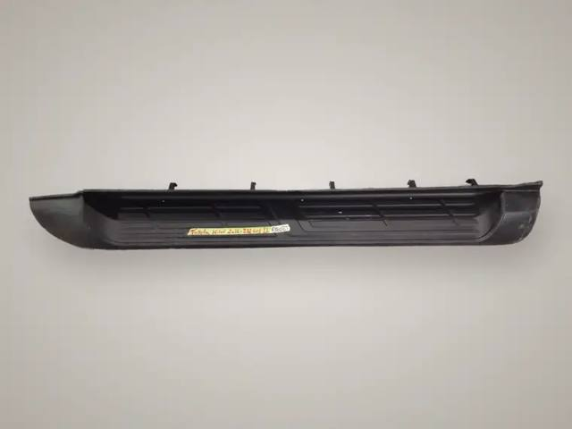
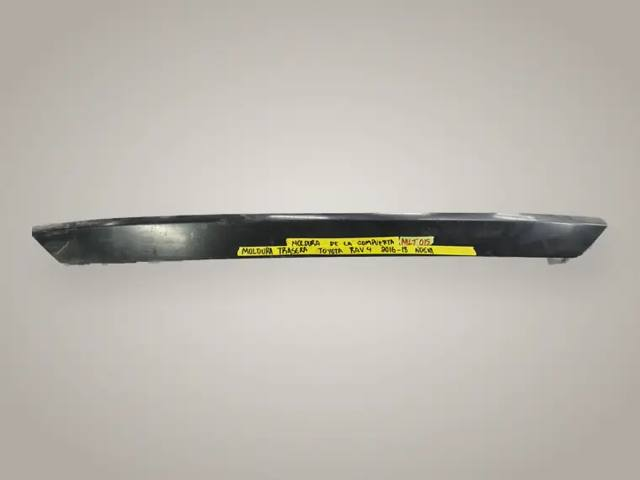
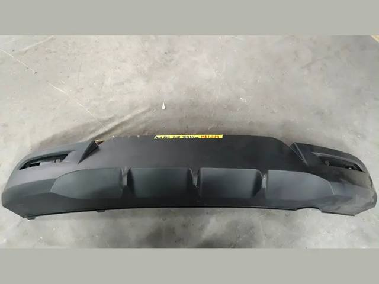
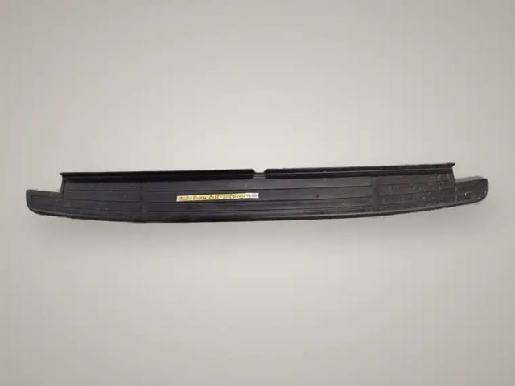
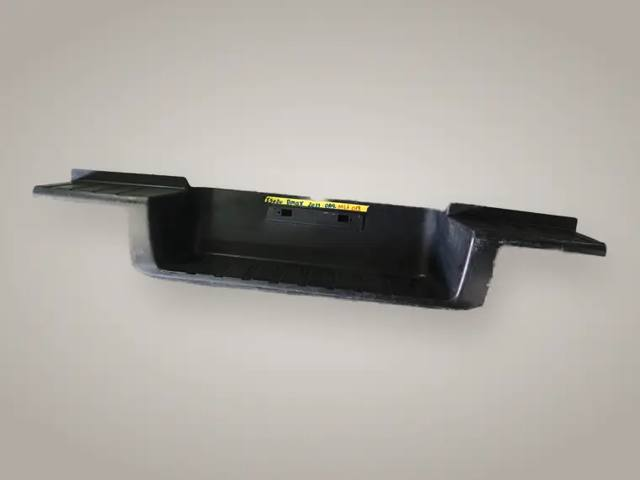

Molduras traseras en Panamá
20 disponibles hoy, originales y genéricas, cada una con su foto y su código. Elige la marca de tu carro:
- Garantía de 3 días
- Foto real de cada pieza
- Efectivo, Yappy o ACH
- Lunes a sábado, 8:00 a. m. a 5:00 p. m.
Molduras traseras para Toyota 4
 599Toyota Corolla2003-07 · original
599Toyota Corolla2003-07 · original
MLT004Toyota Hilux2016-2024 · lado izquierdo · original
MLT015Toyota RAV42016-18 · original nuevo MLT018Toyota Land Cruiser Prado 150 (moldura DE Cajuela)2009-26 · nuevo
MLT018Toyota Land Cruiser Prado 150 (moldura DE Cajuela)2009-26 · nuevoMolduras traseras para KIA 4
 MLT007KIA Rio Hatchback2012-17 · original nuevo
MLT007KIA Rio Hatchback2012-17 · original nuevo MLT011KIA Picanto2015-17 · genérico
MLT011KIA Picanto2015-17 · genérico MLT017KIA Rio2018 · original
MLT017KIA Rio2018 · original
MLT019KIA Rio2018-20 · genérico nuevoMolduras traseras para Isuzu 3

MLT002Isuzu D-Max2012-2020 MLT003Isuzu D-Max2012-2020
MLT003Isuzu D-Max2012-2020
MLT013Isuzu D-Max2021 · originalMolduras traseras para Ford 2
 MLT005Ford Everest
MLT005Ford Everest MLT006Ford Ranger
MLT006Ford RangerMolduras traseras para BMW 2
 MLT014BMW iX (I20)
MLT014BMW iX (I20)Molduras traseras para Nissan 1
Molduras traseras para Mitsubishi 1
 MLT009Mitsubishi L200
MLT009Mitsubishi L200Molduras traseras para Mercedes-Benz 1
 MLT010Mercedes-Benz GLA
MLT010Mercedes-Benz GLAMolduras traseras para GAC 1
Molduras traseras para Suzuki 1
 MLT016Suzuki Vitara
MLT016Suzuki VitaraOtros tipos de pieza
Parrillas 327Faros y lámparas delanteras 250Defensas traseras 248Lámparas traseras 211Defensas delanteras 208Flares 182Covers de halógena 167Guardafangos 141Halógenas y faros antiniebla 112Puertas 99Cubrepolvos 91Capós 69Refuerzos delanteros 69Tapas de baúl 66Marcos de radiador 59Retrovisores 57Estribos y rolling boards 55Defensas delanteras inferiores 52Defensas traseras inferiores 51Tapas superiores de radiador 48Vidrios 47Refuerzos traseros 26Copas 21Extensiones de defensa trasera 18Guardafangos traseros 18Protectores inferiores 14Ventiladores 13Depósitos de agua 13Extensiones de defensa delantera 6Accesorios nuevos 5Soportes de defensa 2